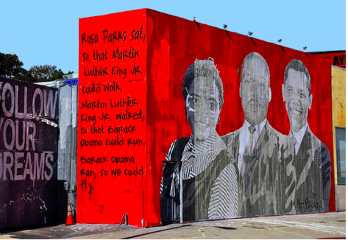
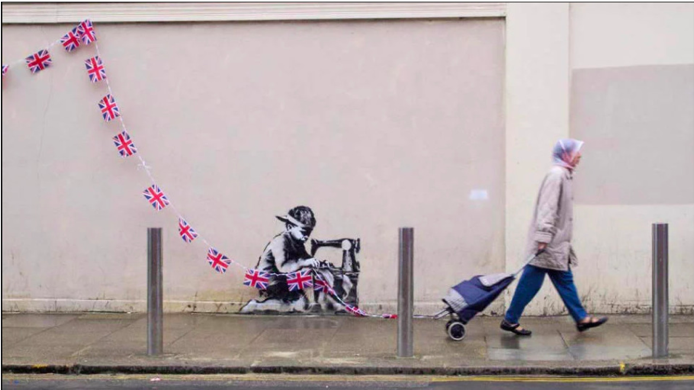
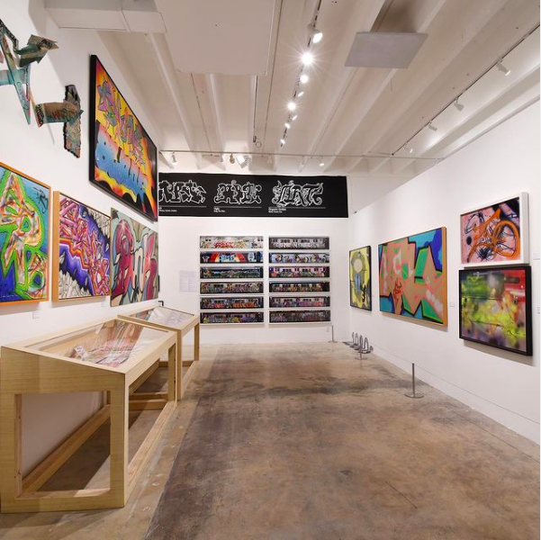

L’art de rue se
développe à New York. Les grapheurs tagaient des murs et les métros
New Yorkais à l’aide de bombes de peinture. Le style des graffitis
est un style totalement original.
Les grapheurs
n’avaient pas le droit de tager sur ces endroits et avaient beaucoup
de problème avec les autorités. Ces tags étaient considérés comme du
vandalisme. De plus, comme pour le rap, les tags dénoncent les
inégalités sociales et les diverses discriminations comme le
racisme.
Vidéo montrant comment les tags se font
sur les métros New Yorkais
Ces grapheurs issus
tout droit du mouvement Hip Hop des années 70, ont inspiré d’autres
artistes à faire de l’art de rue.

Mur à Los Angeles représentant Angela
Davis, Dr Martin Luther King et Barack Obama. Il y a écrit « Rosa
s’est assise donc Martin Luther King Jr a pu marcher. Martin Luther
King Jr a marché donc Barack Obama a pu courir. Barack Obama a couru
donc nous pouvons voler ». Ces 3 afro-américains ont marqué
l’histoire des États-Unis et ont pu faire avancer la société.

Graffi par Banksy à Londres en 2012 appelé ‘slave labor’ qui dénonce le travail forcé des enfants de notre société moderne.
Les arts de rue
aujourd’hui sont très appréciés du publique. Les graffitis sont
divers et variés.
Ils existent des
millions d’artistes à travers le monde.
Petit à petit, des musées entiers sont dédiés à l’art de rue. Le premier musée à avoir ouverts ses portes est le Museum Of Graffiti à Miami aux États-Unis. Dans ce musée on y retrouve des exclusivités faites par les meilleurs grapheurs du monde entier.

Photo prise à l’intérieur du Museum of
Graffiti via le compte Instagram @museumofgraffiti à Miami.